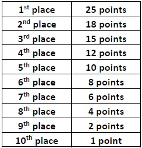
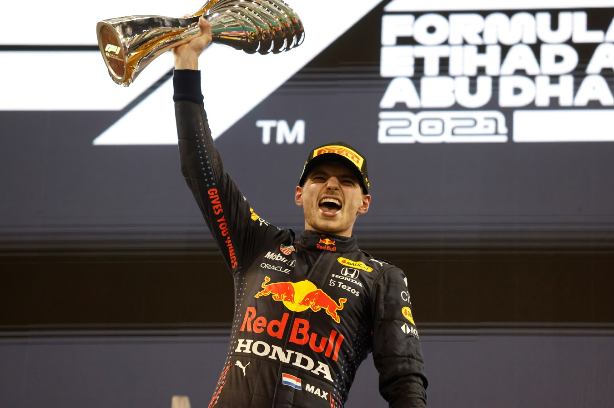

En Formule 1, le championnat est ce qui permet de classer la
performance de chaque pilote et écurie tout le long de la saison,
généralement composée d'environ 20 à 23 courses. Le championnat vise à
couronner le meilleur pilote et l'écurie (constructeur) de la saison.
Voici quelques éléments clé liés au championnat, à la distribution des
points et aux podiums en Formule 1.

Championnat des pilotes
Les pilotes accumulent des points tout au long de la saison en
fonction de leur classement à la fin de chaque course.
Les points sont attribués aux 10 premiers pilotes de chaque course,
selon la grille suivante :
Il y a également un point supplémentaire pour la personne ayant
réalisé le tour le plus rapide durant la course. Pour le recevoir, il
faut que la personne ayant réalisé ce tour se situe dans le top 10.
Championnat des constructeurs : Les écuries accumulent des points en
fonction des résultats combinés de leurs deux pilotes. Les points sont
attribués de la même manière que pour le championnat des pilotes. Par
exemple si le pilote 1, score 10 points et que le pilote 2, score 7
points, l'équipe aura donc 17 points.
Podium : Le podium d'une course est constitué des trois pilotes qui
ont terminé aux trois premières places et d'un représentant de
l'écurie du pilote qui a gagné. Les trois pilotes montent sur le
podium lors de la cérémonie de remise des trophées après la course.
Ils y reçoivent un trophée unique à chaque Grand Prix; ils y serrent
également la main d'un représentant du pays dans lequel se déroule le
Grand Prix et parfois même la main du président. Ils finissent par
gicler du champagne. Le pilote arrivant à la première place est
généralement au centre du podium, le deuxième se met à gauche du
premier et le troisième se met à droite.

Le championnat des pilotes est souvent considéré comme le plus
prestigieux pour les pilotes, tandis que le championnat des
constructeurs récompense la performance globale de l'écurie. Ces
éléments contribuent à rendre la saison de Formule 1 passionnante et
compétitive. Notez que les règles et les points peuvent être ajustés
par la Fédération Internationale de l'Automobile (FIA) d'une saison à
l'autre.